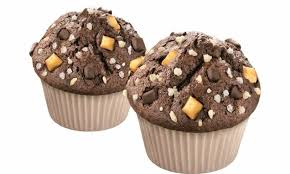

Voorgerecht
Gehaktbrood
Nagerecht
Nagerecht
Als nagerecht gaan we chocolade muffins maken.
Ingrediënten
- 110 gram havermout
- 2 bananen
- 130 gram roomkaas
- 25 gram honing
- 3 eieren
- 30 gram bakpoeder
- 50 gram cacaopoeder
- choco-klontjes
- 180 gram slagroom
- 30 gram cacaopoeder
- 100 gram roomkaas
Bereidingswijze
- Verwarm de oven voor op 180 graden en plaats de papieren cupcake vormpjes in de cupcake-bakvorm. Gebruik je geen papieren vormpjes? Vet de cupcake-vorm goed in met boter.
- Mix alle ingrediënten, behalve de Choco-klontjes met elkaar tot een glad beslag.
- Schep de klontjes door het beslag en verdeel het beslag daarna in de cupcake vormpjes. Doe de vormpjes niet te vol, want het beslag zet nog flink uit in de oven!
- Bak de chocolade muffins in 20 minuten af in het midden van de oven.
- Wacht tot de muffins helemaal zijn afgekoeld, voordat je aan de slag gaat met de room.
- Voor de chocoladeroom klop je de slagroom stijf met de garde of handmixer. Meng daarna de roomkaas en cacaopoeder door de slagroom.
- Versier de muffins met de chocolade room en de chocolade klontjes.
- Geniet ervan!
